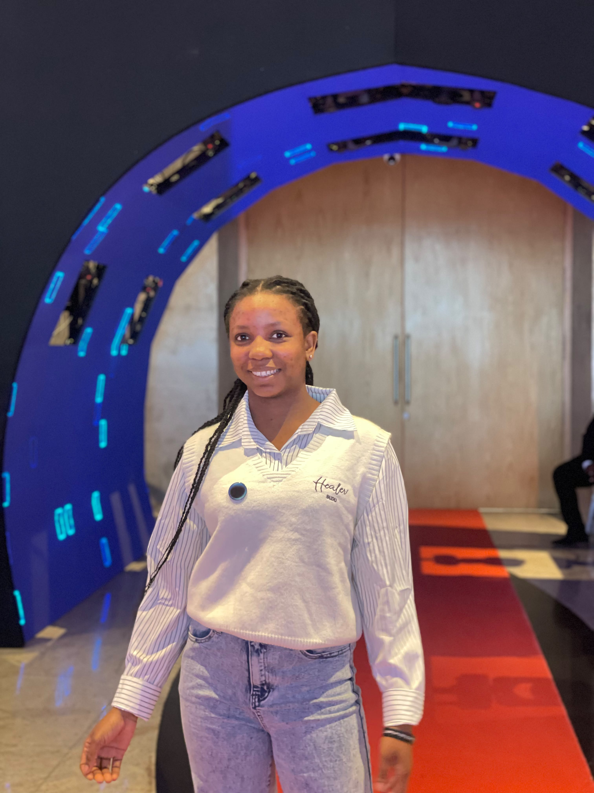

Hi, I'm Florence Asaasim! 
I am a first-year Computer Science student with a passion for technology, problem-solving, and continuous learning. I am currently exploring different areas of technology while building my skills through hands-on projects and practical experience.
I have completed the Google IT Support Professional Certificate and have developed a foundation in programming with Java and C. I am also building experience in web development, software development, and tools such as Git and GitHub.
I enjoy turning what I learn into practical projects, asking questions, and challenging myself to understand how things work. I am continuing to grow as a developer and explore where my interests and strengths can take me in the technology field.